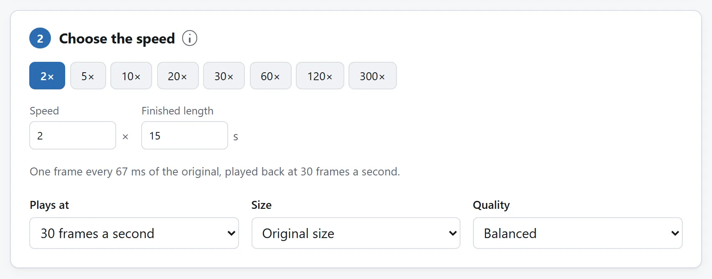
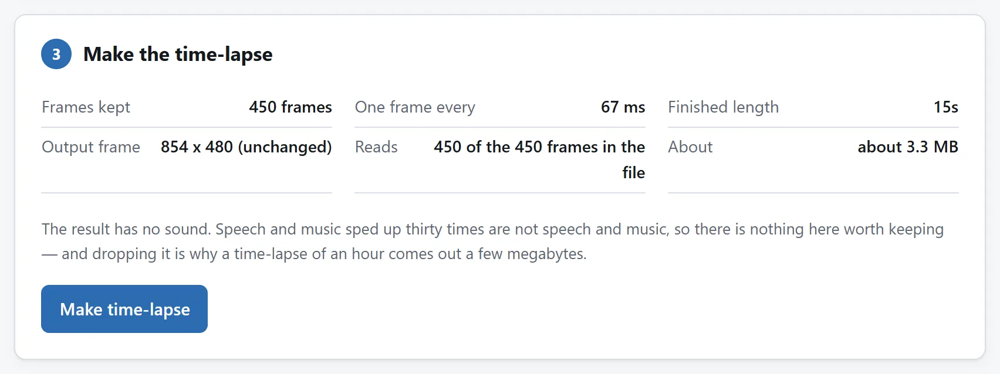

简短的答案
打开延时摄影生成器，把录像拖进去，然后要么定一个速度——从 1.1× 到 1000× 都行——要么干脆不算数，直接说成片要多长。要发到信息流里的东西，六十秒是个不错的起点。选好每秒帧数，原片是 4K 就把尺寸降一档，导出即可。
如果去处只认 GIF，就把导出的片段接着送进视频转 GIF 转换器；但请先读最后一节，因为延时摄影是你能让一个 GIF 背负的最昂贵的货物。
这趟路是内置的：导出之后，下载按钮下方就有一行提议把结果直接带到转换器，片段到那边已经装好。
展示过程，别漏关键步骤
维修、绘画、刷墙或组装可做进展片。先剪准备和收尾，设成品时长，看摘要“每隔多久一帧”。间隔两秒时，两次采样之间完成的动作可能完全消失。短步骤重要就加长成品或减速。
制作器采整个加载片段，较低速度也不写音轨。口头说明或准确事件时间留原件。延时是概览，不是全事件记录。剪后件因播放编辑被拒绝，先本地应用这些编辑重新导出，再做延时。
说时长，别说速度
不必先算倍速。九十分钟素材缩成一分钟，就是 90×。很长的施工记录缩成三十秒，可能超过工具的 1000× 上限。达到上限时检查实际成片长度，或先剪出值得展示的部分。工具直接接受目标时长，自己计算倍速，换成更长的录像也能按同一个目标计算。
速度倍数仍然有用的地方是小数字。1.1× 到 2× 之间，视频还是当视频看的 — 讲座、演示——而超过大约 8×，它就不再是快放，而成了延时摄影：输出的每一帧都是从时间之流里摘出的一个样本，样本与样本之间的一切，就是不在了。
这种抽样也是速度快的原因。工具只读输出需要的那些瞬间——在 100× 时大约是文件的百分之一——而不是把一小时全部解码只为留下一分钟。

帧数与尺寸，简要说
- 每秒帧数。30 帧几乎对什么都算流畅；60 帧只有当运动本身就是主角时才配得上翻倍的体积；24 帧则给云和人流一种讨喜的胶片顿挫感。
- 尺寸。延时摄影几乎总在小屏幕上看。把 4K 降到 1080p，编码器要描述的像素就只剩四分之一，而在手机屏幕上没人会察觉。

延时摄影什么时候才想变成 GIF
几乎从不。延时摄影是整幅画面的持续变化——恰好是 GIF 压缩最不擅长的东西——所以哪怕很短的一段也会落到几十兆，而 MP4 只有十分之一的体积，还更清晰。凡是能播视频的地方，就发视频。
如果去处真的只认 GIF，就在转换器的时间轴上剪出能循环的几秒钟，宽度收着点，帧率降到 10–12。局部 GIF 指南就是这套预算的完整版。
如果你每周都做这件事
这两步分住在两个页面上是有意为之：每个页面只做一件事，每一个都能独自证明没有任何东西离开你的电脑。但这两个页面所运行的一切都是开源的：MIT 许可证，每个工具一个文件夹，零依赖的 ES 模块，README 把它们一个个点名讲清。
如果三脚架上的相机是你日常的一部分，就把代码代理指向代码仓库，让它把抽样器和 GIF 编码器拼成一个页面，你的速度和尺寸预先设好。这些模块就是写来被读的，把它们带走，正是许可证存在的意义。